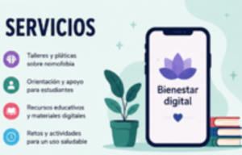

Apoyo para un uso saludable de la tecnología

En el Proyecto Nomofobia trabajamos para promover un equilibrio entre la vida digital y la vida real, ayudando a estudiantes y jóvenes a mejorar su relación con el teléfono móvil.
Nuestras áreas de apoyo
1. Orientación digital personalizada
Brindamos asesoría sobre hábitos digitales saludables, ayudando a identificar el uso excesivo del celular y cómo reducirlo de forma progresiva.
2. Experiencias educativas interactivas
Diseñamos actividades dinámicas donde los estudiantes reflexionan sobre su tiempo en pantalla y aprenden estrategias para gestionarlo mejor.
3. Retos de desconexión digital
Proponemos actividades como “una hora sin celular” o “día sin redes sociales” para fomentar el autocontrol y la convivencia social.
4. Recursos de apoyo y prevención
Compartimos materiales digitales, guías y recomendaciones para fortalecer el bienestar emocional y evitar la dependencia tecnológica.